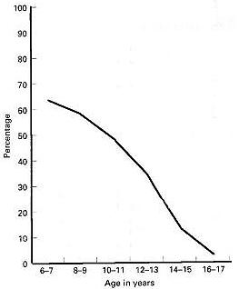

The prepuce
C.J. COLD and J.R. TAYLOR*
Departments of Pathology, Marshfield
Clinic, Wisconsin, USA, and *Health Sciences
Centre, University of Manitoba, Canada
Keywords Prepuce, embryology, development, anatomy, function, circumcision, histology
Introduction
|
The prepuce is a common anatomical structure of the male [1] and female [2] external genitalia of all human and non-human primates; it has been present in primates for at least 65 million years, and is likely to be over 100 million years old, based on its commonality as an anatomical feature in mammals [3] Certain cultures have excised the prepuce from children to conform to societal standards, while other cultures accept the complete external genitalia as normal (Fig. 1). The motives for circumcision in preliterate cultures are difficult to define, but include rites of passage, blood sacrifices and cultural markings [4]. Ritualistic, childhood genital surgery has become popular in the last several thousand years, making the prepuce the most vilified normal anatomical structure of the human body. Rather than acknowledging the prepuce as normal anatomy, some contemporary physicians consider the penile [5] and clitoral prepuce (or clitoral hood) [6,7] to be dangerous and unhealthy. However, before theoretical justifications for circumcision can be considered, a complete understanding of the normal anatomy and function of the prepuce is required. This paper reviews the embryology, anatomy and function of the prepuce. |
||
| Fig. 1. A Japanese fertility
festival at Nagoya; note the banner with ridged bands (arrow) of the prepuce emanating from the frenulum (photograph by Dr R. Brinsko and G. Craigmyles). |
||
Overview
The prepuce is an integral, normal part of the external genitalia that forms the anatomical covering of the glans penis and clitoris. The outer epithelium has the protective function of internalising the glans (clitoris and penis), urethral meatus (in the male) and the inner preputial epithelium, thus decreasing external irritation or contamination. The prepuce is a specialized, junctional mucocutaneous tissue which marks the boundary between mucosa and skin; it is similar to the eyelids, labia minora, anus and lips. The male prepuce also provides adequate mucosa and skin to cover the entire penis during erection. The unique innervation of the prepuce establishes its function as an erogenous tissue [8].
Ritualistic circumcision involves the involuntary removal of normal, healthy genital tissue from infants and children for religious, societal or theoretical medical benefits. Although the amount of genital tissue removed is variable, the penile prepuce is removed in nearly all male circumcisions, and the clitoral prepuce is removed in a Fourcroy grade 1 female circumcision [9] (see Elchalal, pp.103-108).
Embryology
The male prepuce is formed by a midline collision of ectoderm, neuroectoderm and mesenchyme, resulting in a pentalaminar structure composed of a squamous mucosal epithelium lamina propria (corion) dartos muscle, dermis and outer glabrous skin [10].
The embryology of the penile prepuce has been controversial since the original account given by Schweigger-Seidel in 1866 [11], who described a preputial fold that progressively extended and fused with the epithelial covering of the glans. Glenister cited Retterer (1885-1915) as the first to show that the prepuce was formed by a combination of preputial folding and the ingrowth of a cellular lamella [12]. This ingrowth creates the prepuce, glans, corona and coronal sulcus mucosa. This results in a common mucosal epithelium of the glans penis and the inner mucosal lining of the prepuce. The squamous mucosa of the glans penis, coronal sulcus and prepuce should be considered as one tissue compartment [10] with a common cytokeratin polypeptide pattern [13].
|  | |
| Fig. 2. Incidence of preputial adhesions in various age groups, after Øster [20]. | Fig. 3. Retractability of the prepuce in various age groups. After Kayaba et al.[22]. The tight preputial ring is shown in green and the type IV and V as red; a type IV prepuce retracts to the glans corona and type V retracts to completely expose the glans. |
The fused mucosa of the glans penis and the inner lining of the prepuce separates gradually over years, as a spontaneous biological process. Topical steroid [14-16] and nonsteroidal [17] anti-inflammatory ointments are known to accelerate the glans-prepuce separation. In male rhesus monkeys exposed to intrauterine diethylstilbestrol, the normal separation of the glans/prepuce is delayed from a normal age of 2.5-3 years to 4.5-5.5 years [18]. Despite this research, the hormones and/or growth factors responsible for this separation of the glans-prepuce are poorly understood. Gairdner found that 96% of newborn males have a fused mucosa; in 20% of boys aged 5-13 years, he reported that the prepuce could not be completely retracted [19]. Øster confirmed in a large study that preputial non-separation (adhesions) is very common in children and teenagers. The separation of the prepuce/glans penis mucosa is usually complete by about age 17 years, as confirmed by later Chinese studies (Fig. 2) [20,21]. Recent work by Kayaba et al. verified that the preputial orifice may be tight in young boys, but resolves over time (Fig. 3) [22]. Without knowledge of the normal development of the penis, some physicians advocate childhood circumcision as a surgical treatment of normal anatomy [5]. One study stated that microscopic examination of the prepuce circumcised for phimosis showed normal histology in 46% of cases [23]. As the mean age in that study group was 8.7 years, almost half of these boys were circumcised for a normal stage of penile development [22]; a tight preputial orifice with normal histology is not pathological in young boys, but should be considered a normal stage of penile development. Neonatal circumcision, before the prepuce has naturally separated, involves tearing the common prepuce/glans penis mucosa apart, with the concomitant risk of glanular excoriation and injury. Manipulation and retraction of the immature prepuce must be avoided to prevent scarring, bleeding, phimosis and psychological trauma [24].
Frequently after circumcision, the immature mucosa of the glans and the preputial remnant will fuse [25]. Of historical interest, true aposthia (absence of a prepuce) with normal development of the urethra and glans must be very rare: however, it is referenced in Jewish law of 1567 CE, relative to a child born circumcised [26]. This probably represented hypospadias with incomplete development of the prepuce. However, some authors believed that `aposthia' in Jewish males proved the effects of circumcision could be passed on in a Lamarckian-type hereditary transfer of somatic alterations [26]. Although it is generally accepted that normal preputial development is required for the successful canalization of the glans urethra [27], hypospadias [28] and epispadias [29] have been reported with normal preputial development. These reports underscore the complex development of the prepuce and distal urethra. Megameatus with an intact prepuce [30] and subcoronal hypospadias with complete prepuce [31] are two other variants of hypospadias that are important to recognize as contraindications to newborn circumcision.
The clitoral prepuce develops similarly to that in the male [12]. The prepuce of the clitoris forms independently of the urogenital and labioscrotal folds, which form the labia minora and labia majora, respectively [32]. The clitoral prepuce is formed by a cellular lamella which grows down on the dorsum of the clitoris [12] and is fused to the clitoris in the fetus [33].
Some authors state that the clitoral prepuce is formed by a splitting of the urogenital folds around the clitoris, with development of the prepuce superiorly and the clitoral frenulum inferiorly [34]. However, this theory is discordant with earlier studies [12] and has not been explicitly proved. The urogenital groove on the ventral surface of the clitoris prevents circumferential preputial development and results in the hoodlike appearance of the clitoral prepuce. The urogenital groove of the clitoris eventually regresses and develops into the labia minora [32]. In the female, there is no mesenchymal proliferation in the prepuce to form a dartos muscle layer. Physicians can allay parental fear of normal, intact external genitalia by explaining normal development and maturation. With this understanding, physicians will also be less likely to amputate normal, healthy genital tissue from children.
Innervation of the prepuce
The male prepuce has somatosensory innervation by the dorsal nerve of the penis and branches of the perineal nerve (including the posterior scrotal nerves) [35,36]. Autonomic innervation of the prepuce arises from the pelvic plexus. The parasympathetic visceral efferent and afferent fibres arise from the sacral centre (S2-S4), and sympathetic preganglionic afferent and visceral afferent fibres from the thoracolumbar centre (T11-L2). The parasympathetic nerves run adjacent to and through the wall of the membranous urethra [35]. Although most neonatal and childhood circumcisions are performed with no anaesthesia [37], the complicated innervation of the penis explains why a dorsal penile nerve block provides incomplete pain relief for neonatal male circumcision [37,38]. Likewise, a penile ring block cannot block the visceral afferent fibres from the cavernosal nerve nor the posterior scrotal somatosensory branches of the perineal nerve [38]. A eutectic mixture of local anaesthetic cream (EMLA) does not relieve the pain associated with circumcision because of the complexity of penile innervation and the multiple layers that would have to be penetrated by the topical cream in the newborn penis [39]. Amazingly, some modern urology textbooks even recommend wine as an anaesthetic for newborn circumcision [24].
Researchers have documented that women with complete spinal cord injury may achieve orgasm with self-stimulation, suggesting that some sensory pathways of the genital tract may bypass the spinal cord by way of the vagus nerve [40]. Whether the external genitalia, including the prepuce, are innervated by the vagus nerve has yet to be determined.
Although the sensory and autonomic innervation of the penis and clitoris are similar, there is a remarkable difference in their encapsulated somatosensory receptors. Sensory receptors can be classified as mechanoreceptors, e.g. Meissner's corpuscles (Fig. 4), Vater-Pacinian corpuscles (Fig. 5) and Merkel cells (Fig. 6); and nocioceptors (free nerve endings) [41]. A multitude of names have been used to describe these encapsulated receptors, e.g. Krause, Dogiel, genital corpuscles, Endkalpsen [sic] and mucocutaneous end-organs [42], but the term corpuscular (encapsulated) receptors will be used here to include all of these mechanoreceptors. Most of the encapsulated receptors of the prepuce are Meissner corpuscles, as they contact the epithelial basement membrane.
 |
||
| Fig. 4. Corpuscular receptor (Meissner corpuscle) of the prepuce ridged band. Schwann cells (laminar cells) stain positively. S100 stain x100. | Fig. 5. Vater-Pacini corpuscle within the prepuce. Adjacent nerve bundle with rings of Schwann cells around a central neurite. Neurofilament stain x10 [sic]. | Fig. 6. Merkel cells within the basal layer of the prepuce outer glabrous skin. Cytokeratin 20 stain x400. |
The glans penis is primarily innervated by free nerve endings and has primarily protopathic sensitivity [43]. Protopathic sensitivity refers to cruder, poorly localized feelings (including pain, some temperature sensations and certain perceptions of mechanical contact) [44]. In the glans penis, encapsulated end-organs are sparse, and found mainly along the glans corona and the frenulum [43]. The only portion of the body with less fine-touch discrimination than the glans penis is the heel of the foot [45]. In contrast, the male prepuce ridged band (Fig. 7) at the mucocutaneous junction has a high concentration of encapsulated receptors [46]. The innervation difference between the protopathic sensitivity of the glans penis and the corpuscular receptor-rich ridged band of the prepuce is part of the normal complement of penile erogenous tissue.
In females, the glans clitoris and the inner plate of the prepuce have corpuscular receptors on their oppositional surfaces [47]. The glans clitoris also has a much denser concentration of Vater-Pacinian corpuscles than either the glans penis or the male prepuce. The fused common epithelium of the clitoris and the inner plate of the prepuce are reported to have intraepithelial nerves [33]. Merkel cells mediate tactile sensations, and are found in glabrous skin ; they have been reported in the clitoris and can be identified in the male prepuce (Fig. 6) [49].
| Fig. 7. Ridged bands emanating from the frenulum; retracted intact penis. | Fig. 8. Male prepuce with five layers. Mucosa (M), lamina propria (LP), dartos muscle (D), dermis (DE), and glabrous outer epithelium (E). Note there are more black elastic fibres in the dermis than in the mucosal lamina propria. Elastin trichrome x25. |
Mucosal epithelium (inner plate of the prepuce)
The mucosal epithelium of the male prepuce is the same as the squamous mucosal epithelium that covers the glans penis [10]. The glans penis and the inner prepuce share a common, fused mucosal epithelium at birth. Regardless of the embryological explanation, this common epithelium does not separate until the proper hormonal and growth factors are present. The epithelium of the clitoral prepuce is fused in the foetus and has intraepithelial nerves [33]. The fused inner plate of the male prepuce/glans has also been reported to have intraepithelial nerves [50-52].
Ohmori [50] described intraepithelial nerves within the common prepuce-glans penis epithelium in an 11.5-cm male embryo, but later studies by Winkelmann on newborn prepuces failed to identify intraepithelial nerves [53]. It is understandable why Winkelmann did not find these nerves, as he only studied amputated foreskins and not the normal, fused, prepuce/glans penile unit. Studies of the complete human foetal penis with careful attention to this area will be required before the assertions of Dogiel and Ohmori for intraepithelial nerves of the male prepuce can be dismissed. The mucosal epithelium also contains Langerhans cells, but does not contain melanocytes.
Lamina propria of preputial mucosa
The lamina propria of the male and female prepuce is very vascular, which explains the common haemorrhagic complications associated with circumcision. The male prepuce has looser collagen than the dense collagenous lamina propria of the glans penis. The ridged band of the prepuce is near the mucocutaneous tip (acroposthion) of the male prepuce and, in the unretracted prepuce, usually lies against the glans penis [46]. The mucosal lamina propria (corion) is devoid of lanugo hair follicles, sweat and sebaceous glands [46]. Even in modern textbooks, Tyson's glands are often described as the source of smegma [54]; however, no evidence of Tyson's glands has ever been described outside of Cowper's macroscopic description of these glands in 1694 [55]. This may be one of the longest held myths in medicine [55,56]. Cowper's description of Tyson's glands in the human is actually of hirsutoid papillomas of the glans penis, which are fibroepithelial structures and not glandular structures [55]. Although other mammals have true clitoral and penile preputial glands which secrete sex pheromones, there is no current evidence of these glands in humans [57].
Dartos muscle
The dartos smooth muscle is specific to the male external genitalia and the vast majority of the penile dartos muscle is contained within the prepuce. The dartos muscle consists of smooth muscle cells invested with elastic fibres (Fig. 8). From the prepuce, the delicate, attenuated penile dartos muscle surrounds the shaft of the penis and is continuous with the scrotal dartos muscle. The penile dartos muscle is temperature-dependent and allows for the volume changes required for erection [58]. The function of the dartos muscle has been well described by Jefferson, and its loss to circumcision explains the altered response of the circumcised penis to temperature changes. In the infant, the muscle fibres are intertwined and arranged in a mosaic-like pattern [59], causing the distal prepuce to pucker and close like a one-way valve [60]. When comparing the dartos muscle layer of the prepuce in males before and after puberty, the ratio of muscle fibres to elastic fibres decreases. This may explain why on gross inspection the distal prepuce is puckered in the infant and appears more relaxed in the adult. The increase in elastic fibres may be necessary for the uncomplicated eversion of the glans in the adult. While the aetiology of this transformation is unknown, steroid hormones may have an influence, as their topical application can accelerate the retractability of the prepuce in prepubescent boys [61]. Nerve bundles of the prepuce run alongside the dartos muscle.
Dermis of the prepuce
The dermis of the prepuce consists of connective tissue, blood vessels, nerve trunks, Meissner corpuscles within the papillae, and scattered sebaceous glands. The dermis of the male prepuce appears to have more elastic fibres than the lamina propria of the prepuce. The difference between the elastic fibres in the preputial lamina propria and dermis may also help form the `muzzle' configuration around the glans penis. The elastic tissue of the prepuce dermis, along with the dartos muscle arid frenulum, tether the prepuce and help return it to its anatomically correct position after deployment during erection or after manual retraction.
The clitoral prepuce has only a dermal component with fewer elastic fibres than the male prepuce. The outer layer of the male and female prepuce has occasional sebaceous glands and sweat glands.
Outer epithelium (glabrous skin of the prepuce)
The outer epithelium of the prepuce consists of stratified squamous cells that are keratinized. Melanocytes are present in the basal layers. Langerhans cells and Merkel cells are also present (Fig. 6). The Langerhans cells are the first line of the body's immune defence system and are required for normal immune function. Merkel cells are specialized neuroendocrine cells that mediate tactile sensations and stain positively with cytokeratin 20 [10]. The Merkel cells of glabrous skin contain characteristic membrane-bound dense core granules and are sometimes associated with unmyelinated neurites [48]. Merkel cells may express VIP, neurone-specific enolase, chromogranin A and cytokeratin 20 [10]. The function and concentration of Merkel cells within the external genitalia has not been extensively studied.
The preputial sac
The male preputial sac is moistened by secretions from the prostate, seminal vesicle and urethral glands of Littre [56]. Urine is not a normal component of subpreputial wetness [56]. The rich vascular plexus of the prepuce mucosa may facilitate production of a fluid transudate similar to that of the vaginal/vulva mucosa [62]. The female preputial sac is kept moist by a fluid transudate. Unlike some other mammals, the female preputial sac has not been shown to contain any preputial glands. VIP mediates the moistness of the aroused female genitalia [62], but it is unknown whether it also contributes to the preputial moistness of the aroused male. The moist, lubricated male preputial sac provides for atraumatic vaginal intercourse.
The preputial sac is colonized by Cornybacterium, Gram-negative anaerobes (especially Bacteroides melamnogemcus), Enterococci, Enterobacteria and coagulase-positive Staphylococci [63]. Although Mycobacterium smegmatis is reported in a modern textbook as a possible factor in penile carcinogenesis [64], attempts to show that M. smegmatis produces carcinogens or procarcinogens have been unsuccessful [65,66]. In the study by Neubert and Lentze [63], acid-fast bacteria could be seen on the Ziehl-Nielsen smears, but nothing could be cultured in Lowenstein-Jensen medium. Therefore, the acid-fast organisms found in the preputial sac by Neubert and Lentze could have been mycobacterial contaminants from soil and water, such as M. gordonae[67]. Although M. smegmatis may be a commensal organism within the preputial sac it does not cause genital tract disease. However, M. smegmatis can cause non-genital soft-tissue infections after trauma or surgery [68]. The normal bacterial flora of the clitoral preputial sac has not been reported, but it would be assumed to be similar to the vulva, and would include Cornybacterium. Of interest, one study found M. smegmatis more commonly in female labial smears (46%) than in male urethral smears (4.5%) [69]. Furthermore, this study showed that circumcision had no effect on the recovery of acid-fast bacteria from the male urethra, and the presence of acid-fast bacteria did not cause urethritis. These data support the contention that M. smegmatis is a benign commensal organism within the external genital tract.
The preputial sac contains desquamated squamous epithelial cells similar to other mucosal cavities such as the oral cavity or vagina. This white, creamy material may collect under the prepuce of the clitoris (smegma clitoridis) or penis (smegma preputii). Male smegma has been shown to contain squalene, beta-cholestanol, sterols and long-chain fatty acids [65,66,70]. In men over 35 years old, 9,10-methyleneoctadecanoic acid is present, but it is not found in younger (17-20-year-old) males [70]. The function of the steroids, sterols and fatty acids produced within the human prepuce are unknown, but are considered to be protective elsewhere on the skin. In mammals that have preputial glands, sex pheromones and aggression-promoting pheromones are known to occur [57,71].
Clinically, the presence of smegma preputii is a rare finding; in a prospective examination of 4521 uncircumcised boys, only 0.5% had smegma [72]. In adult men with clinically confirmed phimosis, only 6% had smegma present on examination [73]. Smegma can also be found in up to 25% of circumcised male children [25] and can be detected in circumcised adults.
Immunological aspects of the prepuce
Although it has been known for many years that Langerhans and dendritic cells play an essential role in the cutaneous mucosal immune system, only recently has the mucosal immune system been used to prevented urinary tract infections by introducing antigens, i.e. immunisation, via the vaginal mucosa [74]. The immunologically active mucosal system of the prepuce may also provide a logical route of administering mucosal vaccines [75].
Although it has been known that Langerhans cells can secrete cytokines [76], only recently has it been discovered that squamous epithelial cells, with no Langerhans cells, can secrete cytokines and interleukin-1 that stimulate the immune response of T cells [77]. The cytokines released by the preputial mucosa and skin have not been carefully studied. Weiss et al. were unable to document Langerhans cells in the mucosal surface of newborn foreskins [78], but in the adult prepuce, Langerhans cells are easily identified in the mucosal epithelium. The inability of Weiss et al. to find Langerhans cells in the newborn can be explained by the fusion of the preputial mucosa to the glanular mucosa in the sterile intrauterine environment. Langerhans cells would not be expected in the fused prepuce/glans penile mucosa until later in life, when the prepuce becomes retractable and the mucosa is exposed to antigens.
The role of the diversity of subpreputial flora in preventing infection has yet to be explored, as the study of the immunological function of the prepuce is in its infancy [79]. Circumcision has been justified by some because it removes the Langerhans' cells of the prepuce [80] and therefore supposedly decreases the risk of HIV infections. This theory is flawed, as even after circumcision, there is residual penile mucosa of the glans, and there are Langerhans' cells in the penile shaft epidermis. Surgical removal of the Langerhans cells in all mucosa and skin to prevent infections is not feasible, nor rational. In addition, the aggressive circumcision campaign in the USA has not prevented sexually transmitted infections, including HIV. Therefore, Langerhans cells of the prepuce should be understood as normal mucosal immune cells, rather than a pathological entity requiring excision.
Preputial coverage of the glans
There is variability in the preputial coverage of the intact glans penis and clitoris. Some adult men have the glans penis completely covered by the prepuce while others have only partial coverage of the glans [46,63]. In a similar manner, the glans clitoris can be partially or completely covered by the prepuce; this merely represents anatomical variation.
Sexual function
The prepuce is primary, erogenous tissue necessary for normal sexual function [8]. The complex interaction between the protopathic sensitivity of the corpuscular receptor-deficient glans penis [42] and the corpuscular receptor-rich ridged band of the male prepuce [45] is required for normal copulatory behaviour. The increased frequency of masturbation, anal intercourse and fellatio reported by circumcised men in the USA [81] may possibly be due to the sensory imbalance caused by circumcision. Clearly, amputation of the prepuce causes changes in sexual behaviour in human males [81] and females [82].
The effect of circumcision on penile anatomy
Surgical amputation of the prepuce removes many of the fine-touch corpuscular receptors from the penis and clitoris. In males, circumcision is essentially a partial penile mucosectomy. The residual exposed glans mucosa becomes abnormally keratinized with an increase in the number of cell layers in glanular mucosal epithelium. The urethral meatus is exposed and prone to irritation. Meatal stenosis can be a complication after circumcision. During circumcision, the frenular artery may also be ablated, depriving the anterior urethra of its major blood supply. The combined effect of urethral ischaemia and irritation results in the development of meatal stenosis in 5-10% of circumcised males [25,83-86]. The risk of glanular injury when tearing the fused penile mucosa, and the development of meatal stenosis, makes circumcision in the newborn period inadvisable [87-89].
During circumcision, most of the penile dartos muscle is removed; all that remains is a few bundles of muscle at the circumcision scar. It has been observed that the flaccid penis in circumcised males tends to hang less vertically than in those with complete anatomy. The loss of dartos muscle support may explain the difference. Certainly, the loss of most of the penile dartos muscle makes the penis less able to make positional adjustments during erection and with temperature changes.
For unknown reasons, keloid formation after circumcision is quite rare [90,91]. Although the circumcision scar has not been thoroughly studied, there are several different theories as to what happens when the nerves of the sensory receptors of the prepuce are transected during circumcision. Some have speculated that after circumcision, these nerves regenerate and develop new encapsulated receptors [92]. According to this theory, there would be a significant loss of penile sensitivity after circumcision, but this loss would not be apparent 6 months after the circumcision [92]. This notion is in direct conflict with human and animal studies that show when a nerve is transected, and the distal tissue is amputated, the proximal nerve undergoes acute axonal swelling [93-95]. After acute injury, the axon begins to sprout and branch at the injury site. Without the distal nerve, this frustrated attempt at re-innervation results in a bulbous, disordered tangle of axons, Schwann cells and fibrous tissue. Histology of the male circumcision scar shows amputation neuromas, Schwann cell proliferation and the bulbous collection of variably sized neurites. Amputation neuromas do not mediate normal sensation and are notorious for generating pain. Animal studies show that extirpation of the external genitalia results in acute retrograde degeneration of the nerve axon back to the spinal cord [96]. Therefore, the changes in circumcised male sexual behaviour [81] may be related to a central nervous system alteration by retrograde axonal degeneration, or to peripheral nervous system damage by loss of the prepuce ridged band and amputation neuroma. It is assumed that amputation neuromas also form at the female circumcision scar, although we are unaware of a formal histology study.
Although foreskin restoration cannot regenerate dartos muscle or encapsulated sensory receptors, it appears that the residual stump of prepuce could be stretched to provide partial covering of the coronal sulcus and corona. This re-covering of the corona, combined with a reversion of the epithelium to the normal squamous mucosa of the glans, may account for the improved sensitivity reported by men who have nonsurgically restored their foreskins [97]. Likewise, it appears that restoration of the female vulva after circumcision may provide subjective improvements in sensitivity and selfesteem [98]. Further histological examination and somatosensory evaluation of the circumcision scar and the restored foreskin is needed to explain the altered sensitivity reported by circumcision and restoration.
Discussion
The prepuce is a specialized, specific erogenous tissue in both males and females. Therefore, surgical excision should be restricted to lesions that are unresponsive to medical therapy, such as lichen sclerosis of the penis (balanitis xerotica obliterans) or vulva, which is unresponsive to other therapies (e.g. topical clobetasol, intralesional corticosteroids, topical testosterone propionate ointment, etretinate, and carbon dioxide or laser vaporization) [99]. Preputial plasty [100] should be considered in place of circumcision whenever possible, so as to preserve the corpuscular sensory receptors, dartos muscle, penile mucosa and complete function of the penis, while avoiding abnormal exposure and keratinization of the glans penis. Although some cultures celebrate the abnormal anatomy caused by circumcision, many women [101,102] and men [103] have reported this abnormal penile/clitoral exposure to be uncomfortable. The male prepuce contains the vast majority of the penile dartos muscle that cannot be regenerated after circumcision. The preputial mucosa and outer epithelium provides adequate epithelial coverage of the erect penis.
The loss of the prepuce ridged band and the formation of an amputation neuroma are two further complications associated with male circumcision. Although a Fourcroy grade 1 female circumcision would excise less tissue than in a male, this comparison cannot be used to justify female circumcision. Excision of normal, erogenous genital tissue from healthy male or female children cannot be condoned, as the histology confirms that the external genitalia are specialized sensory tissues.
The complex anatomy and function of the prepuce, along with the fused prepuce/glans penile mucosa in the immature penis, dictates that neonatal circumcision be strictly avoided, as recommended by the Australasian Paediatric surgeons [88], Canadian Paediatric Society [89], and a paediatric urology textbook [87]. Removal of normal genital anatomy in children and infants should be deferred until the individual can make an informed decision [104]. If external genital tissue must be excised to combat a disease process that threatens the child's health, and is unresponsive to medical therapy., then the amount of tissue should be limited so as to preserve the anatomy and function of the external genitalia. All genital tissue excised from children should be microscopically examined to confirm the clinical opinion of the disease. As physicians and parents learn the normal anatomy and functions of the external genitalia, there will be greater understanding of its essential nature, and more attempts to limit its removal.
Acknowledgements
We thank Drs. Michelle Storms and Ken McGrath for invaluable editorial assistance; Barb Bartkowiak, Alana Ziaya. Tracey Heldt and Joann Gumz for library assistance; Marshfield Clinic graphic arts, and the histology section of pathology for their expertise and help: Steve Booher for photographs; Shirley Thompson for drawings; Laura Bliven for immunoperoxidase staining.
References
- Harrison RM, Lewis RW. The male reproductive tract and its fluids. In Dukelow WR, Erwin J, eds. Reproduction and Development in Comparative Primate Biology. Vol 3. New York: Liss, 1986; 108-9
- Soliman AH. A comparative study of the female genital system of Mammalia. [MD Thesis]. Cairo, Egypt: Department of Anatomy, Cairo University 1956
- Martin RD. Primate origins and evolution: a phylogenetic reconstruction. Princeton, New Jersey: Princeton University Press, 1990; 42-3
- Weiss C. Motives for male circumcision among preliterate and literate peoples. J Sex Res 1966; 2: 69-88
- Weiss GN. Prophylactic neonatal surgery and infectious diseases. Pediatr Infect Dis J 1997; 16: 727-34
- Anon. Female circumcision is curbed in Egypt. Br Med J 1996; 313: 249
- Burt JC. Surgery of Love. New York: Carlton Press, 1975; 1-5
- Winkelmann RK. The erogenous zones: their nerve supply and significance. Proc Mayo Clin 1959; 34: 39-47
- Fourcroy JL. L'eternal couteau: review of female circumcision. Urology 1983; 22: 458-61
- Barreto J, Caballero C. Cubilla A. Penis. In: Sternberg SS, ed. Histology for Pathologists, 2nd edn. New York: Raven Press, 1997; 1043-4
- Schweigger-Seidel F. Zur Entwicklung des Praeputium. Virchow Archiv 1866; 37: 219-28
- Glenister TW. A consideration of the process involved in the development of the prepuce in man. Br J Urol 1956; 28: 243-9
- Achtstatter T, Moll R, Moore B. Franke WW. Cytokeratin polypeptide patterns of different epithelia of the human male urogenital tract. J Histo Chem Cytochem 1985; 33: 415-26
- Wright JE. The treatment of childhood phimosis with topical steroid. Aust N Z J Surg 1994; 64: 327-8
- Kikiros CS, Beasley SW, Woodward AA. The response of phimosis to local steroid application. Ped Sury mt 1993; 8: 329-32
- Golubovic Z, Milanovic D, Vukadinovic V, Rakic I, Perovic S. The conservative treatment of phimosis in boys. Br J Urol 1996; 78: 786-8
- Attila MK, Dündaröz R, Odabas Ö, Öztürk H, Akin R, Gökçay E. A nonsurgical approach to the treatment of phimosis: local nonsteroidal anti-inflammatory ointment application. J Urol 1997; 158: 196-7
- Thompson RS. Hess DL, Binkerd PE, Hendricks AG. The effects of prenatal diethyistilbestrol on the genitalia of pubertal Macaca mulatta. J Reprod Med 1981; 26: 309-16
- Gairdner D. The fate of the foreskin. Br Med J 1949; 2: 1433
- Øster J. Further fate of the foreskin. Arch Dis Child 1968; 43: 200-3
- Hsu CC. The development of the prepuce. J Formosan Med Assoc 1983; 82: 314-20
- Kayaba H, Tanimura H, Kitajima S, Fujiwara Y, Kato T, Kata T. Analysis of shape and retractability of the prepuce in 603 Japanese boys. J Urol 1996; 156: 1813-5
- Clemmensen OJ, Krogh J, Petri M. The histologic spectrum of prepuces from patients with phimosis. Am J Dermatopathol 1988; 10: 104-8
- Baskin LS. Circumcision. In Baskin LS, Kogan BA. Duckett JW, eds, Handbook of Pediatric Urology. Philadelphia: Lippincott-Raven, 1997; 1-9
- Van Howe RS. Variations in penile appearance and findings: a prospective study. Br J Urol 1997; 80: 776-82
- Talbot ES. Inheritance of circumcision effects. Medicine 1898; 4: 473-5
- Altemus AR, Hutchins GM. Development of the human anterior urethra. J Urol 1991; 146: 1085-93
- Hatch DA, Maizels M, Zaontz MR, Firlit CF. Hypospadias hidden by a complete prepuce. Surg Gynecol Obstetr 1989; 169: 233-4
- Bhattacharya V, Sinha JK, Tripathi FM. A rare case of epispadias with normal prepuce. Plastic Reconstr Surg 1982; 70: 372-4
- Duckett JW, Keating MA. Technical challenge of the megameatus intact prepuce hypospadias variant: the pyramid procedure. J Urol 1989; 141: 1407-9
- Attalla MF. Subcoronal hypospadias with complete prepuce: a distinct entity and new procedure for repair. Br J Plast Surg 1991; 44: 122-5
- England MA. Life Before Birth. 2nd edn. London: Mosby Wolfe 1996; 162
- Yamada K. Studies in the innervation in tenth month human embryo. Tohoku J Exper Med 1951; 54: 151
- Cunningham FG, Macdonald PC, Levano KI, Gant NF, Gustrap LC. eds, Williams Obstetrics. 19th edn. Norwalk Conn: Appleton and Lange 1993; 57
- Devine CJ, Jordan GH. Surgery of the penis and urethra. In Walsh PC, Retik AB, Stamey TA, Vaughan ED, eds. Campbells Urology, 6th edn, Vol 3. Philadelphia: Saunders 1992; 2964
- Snell RS. Clinical Anatomy for Medical Students. 5th edn. Boston: Little Brown 1995; 358
- Lander J, Brady-Fryer B, Metcalfe JB, Nazarali S, Muttitt S. Comparison of ring block, dorsal penile nerve block and topical anesthesia for neonatal circumcision: a randomized controlled trial. JAMA 1997; 278: 2157-62
- Van Howe RS, Cold CJ. Local anesthesia for infants undergoing circumcision. JAMA 1998; 279: 1169
- Cold CJ. Neonatal circumcision. Lancet 1997; 349: 1257
- Whipple B, Gerdes CA. Komisaruk BR. Sexual response to self-stimulation in women with complete spinal cord injury. I Sex Research 1996; 33: 231-40
- Butler AB, Hodos W. Comparative Vertebrate Neuroanatomy: Evolution and Adaptation. New York: Wiley-Liss, 1996; 26
- Winkelmann RK. The mucocutaneous end-organ. Arch Dermatol 1957; 76: 225-35
- Halata Z, Munger B. The neuroanatomical basis for the protopathic sensibility of the human glans penis. Brain Res 1986; 371: 205-30
- Light AR, Perl ER. Peripheral sensory systems. In Dyck PJ, Thomas PK, eds, Peripheral Neuropathy. 3rd edn. Philadelphia: Saunders 1993; 150
- von Frey M. Beitraege zur Physiologie des Schmerzsinns. Zweite Mitt. Akad Wiss Leipzig Math Naturwiss Kl Ber 1984; 46: 283-96
- Taylor JR, Lockwood AP, Taylor AJ. The prepuce: specialized mucosa of the penis and its loss to circumcision. Br J Urol 1996; 77: 291-5
- Yamada K. On the sensory nerve terminations in clitoris in human adult. Tohoku J Exper Med 1951; 54: 163-74
- Gould VE, Moll R, Moll I et al. Neuroendocrine (Merkel) cells of the skin: hyperplasia, dysplasia, and neoplasms. Lab Invest 1985; 52: 334-53
- Krantz KE. Innervation of the human vulva and vagina microscopic study. Obstet Gynecol 1958; 12: 382-96
- Ohmori D. Über die Entwicklung der Innervation der genital Apparatus als peripheren Aufnahme-apparat der genitalen Reflex. Ztschr Jges Anat u. Entw 1924; 70: 347-410
- Dogiel AS. Die Nervenendigungen in der Schleimhaut der asseren Genitalorgane des Menschen. Arch f. mikr Anat 1893; 41: 585-612
- Dogiel AS. Uber die nervenendapparate in der Haut des Menschen. Ztschr f. Wiss Zool 1903; 75: 46-111
- Winkelmann RK. The cutaneous innervation of human newborn prepuce. J Invest Derm 1956; 26: 53-67
- Ro JY, Grignon DJ, Amin MB, Ayala A. Atlas of Surgical Pathology of the Male Reproductive Tract. Philadelphia: WB Saunders, 1997; 189
- Hyman AB, Brownstein MH. Tyson's `glands': ectopic sebaceous glands and papillomatosis penis. Arch Derm 1969; 99: 31-6
- Parkash S, Rao R, Venkatesan K, Ramakrishnan S. Sub-preputial wetness: its nature. Ann Natl Med Sci India 1982; 18: 109-12
- Gawienowski AM, Orsulak PJ, Stacewicz-Sauntzakis M, Joseph BM. Presence of sex pheromones in preputial glands of male rats. J Endocr 1975; 67: 283-8
- Jefferson G. The peripenic muscle; some observations on the anatomy of phimosis. Surg Gynecol Obstetr 1916; 23: 177-81
- Lakshmanan S, Prakash S. Human prepuce: some aspects of structure and function. Indian I Surg 1980; 42: 134-7
- Woolsey G. Applied Surgical Anatomy. New York: Lea Brothers, 1902; 405-7
- Van Howe RS. Cost-effective treatment of phimosis. Pediatrics 1998; 102: E43
- Levin RJ. VIP, vagina, clitoral, and periurethral glans an update on human female genital arousal. Exp Clin Endocrinol 1991; 98: 61-9
- Neubert U, Lentze I. Die bakterielle H flora des Präputialraumes. Der Hautarzt 1979; 30: 49-53
- Bostwick DG, Eble JN. Urologic Surgical Pathology. 1st edn. St. Louis: Mosby 1997;; 697
- Sobel H, Plaut A. The assimilation of cholesterol by Mycobacterium smegmatis. J Bacteriol 1949; 57: 377-82
- Kamat VB, Panse TB, Khanolkar VR. Steroids in human smegma. Curr Sci (Bangalore) 1956; 25: 261-2
- Murray PR, Baron EJ, Pfallerr MA et al. Manual of Clinical Microbiology, 6th edn. Washington DC: American Society of Microbiologists, 1995; 406
- Wallace RJ, Nash DR, Tsukamur M, Blacklock ZM, Silcox VA. Human diseases due to Mycobacterium smegmatis. J Infect Dis 1988; 158: 52-9
- Morrison AI. Non-specific urethritis investigated by Ziehl-Nielsen staining of the urethral discharge. Br J Vener Dis 1969; 45: 55-7
- O'Neill HJ. Gershbein LL. Lipids of human and equine smegma. Oncology 1976; 33: 161-6
- Jones RB, Nowell NW. Effects of preputial and coagulating gland secretions upon aggressive behavior in male mice: a confirmation. J Endocr 1973; 59: 203-4
- Imamura E. Phimosis of infants and young children in Japan. Acta Paediatr Jpn 1997; 39: 403-5
- Parkash S. Phimosis and its plastic correction. J Indian Med Assoc 1972; 58: 389-90
- Uehling DT, Hopkins WJ, Balish W, Xing Y, Heisey DM. Vaginal mucosal immunization for recurrent urinary tract infection: phase II clinical trial. J Urol 1997; 157: 2049-52
- Kiyono H, Miller CJ, Lu Y et al. The common mucosa immune system for the reproductive tract: basic principles applied toward an AIDS vaccine. Adv Drug Deliv Rev 1995; 18: 23-51
- Saunders DN, Dinarella CA, Morhernn VB. Langerhans cell production of interleukin 1. J Invest Dermatol 1984; 82: 605-7
- Kupper TS. Interleukin 1 and other human keratinocyte cytokines; molecular and functional characterization. Adv Dermatol 1988; 3: 293-306
- Weiss GN, Sanders M, Westbrook KC. The distribution of Langerhans cells in the human prepuce: site of diminished immune response? Isr J Med Sci 1993; 29: 42-3
- Fleiss PM, Hodges F, Van Howe RS. Immunological functions of the human prepuce: a review. Sex Transm Inf (formerly Genitourin Med) 1998; 74: 364-7
- Royce RA, Sena A, Cates W, Cohen MS. Sexual transmission of HIV. N Engl J Med 1997; 336: 1072-8
- Laumann ED, Masi CM, Zuckerman EW. Circumcision in the United States: prevalence, prophylactic effects, and sexual practice. JAMA 1997; 277: 1052-7
- Lightfoot-Klein H. Prisoners of Ritual. New York: Harrington Park Press, 1989; 133-4
- Patel H. The problem of routine circumcision. Can Med Assoc J 1966; 95: 576
- Stenram A, Malmfors G, Okmian L. Circumcision for phimosis: a follow-up study. Scand J Urol Nephrol 1986; 20: 89-92
- Persad R, Sharma S, McTavish J, Imber C, Mouriquand PD. Clinical presentation and pathophysiology of meatal stenosis following circumcision. Br J Urol 1995; 75: 91-3
- Griffiths DM, Atwell JD, Freeman NV. A prospective survey of the indications and morbidity of circumcision in children. Eur Urol 1985; 11: 184-7
- Frank JD. Circumcision, meatotomy and meatoplasty. In Spitz L, Coran AG, eds, Rob and Smith Pediatric Surgery. London: Chapman & Hall, 1995; 738-42
- Leditschke JF. Australasian Association of Paediatric Surgeons. Guidelines for Circumcision. Hersion, Queensland, Australia: April 1996
- Canadian Paediatric Society. Neonatal circumcision revisited. Fetus and newborn committee. Can Med Assoc J 1996; 154: 769-80
- Warwick DJ, Dickson WA. Keloid of the penis after circumcision. Postgrad Med J 1993; 69: 237-9
- Gurunluoglu R, Bayramicil M, Numanoglu A. Keloid of the penis after circumcision. Br J Plast Surg 1996; 49: 425-6
- Xin ZC, Choi YD, Rha KH, Choi HK. Somatosensory evoked potentials in patients with premature ejaculation. J Urol 1997; 158: 451
- Cold CJ, Van Howe RS. Somatosensory evoked potentials in patients with premature ejaculation. J Urol 1998; 159: 2103-4
- Dyck PJ, Thomas PK, Griffin JW et al. Degeneration and regeneration in the peripheral nervous system. In Griffin JW, Hoffman PN, eds. Peripheral Neuropathy. 3rd edn. Philadelphia: Saunders 1993; 372
- Burger PC, Scheithauer BW, Vogel FS. Surgical Pathology of the Nervous System and its Coverings. 3rd edn. New York: Churchill Livingstone, 1991; 669-71
- Flieger S, Welento J, Boratynski Z, Krzyzanowski J, Slawomirski J. Sources of the autonomic and afferent fibers to the clitoris in pig. Folia Morphol (Warsz) 1988; 47: 83-8
- Anonymous. The joy of uncircumcision. Br Med J 1994; 309: 676-7
- McConville B. Reconstructive surgery for women that have been circumcised. The Independent (London). May 30, 1997
- English JC, Laws RA, Keough GC, Wilde JL, Foley JP, Elston DM. Dermatoses of the glans penis and prepuce. J Am Acad Dermatol 1997; 37: 1-24
- Cuckow PM, Rix G, Mouriquand DE. Preputial plasty: a good alternative to circumcision. J Ped Surg 1994; 29: 561-3
- Abraham L. Ohio medical groups hit for not exposing MD's `Love Surgery'. American Medical News 1989; Jan 27; 1-12
- Abraham L. Ohio MD surrenders license before `love surgery' hearing. American Medical News 1989; Feb. 10; 9
- Hammond T. Long-term consequences of neonatal circumcision: a preliminary poll of circumcised men. In Denniston GC, Milos MF, eds. Sexual Mutilations: a Human Tragedy. New York: Plenum Press, 1997; 125-9
- Committee on Bioethics. Informed consent, parental permission, and assent in pediatric practice. Pediatrics 1995; 95: 314-7
Authors
C.J. Cold, MD, Pathologist.
J.R. Taylor, MB, ChB, MRCPED, FRCPC, Pathologist.
Correspondence: Christopher J. Cold, MD, Department of
Pathology,
1000 North Oak Ave, Marshfield, Wisconsin, 54449, USA.
E-mail: coldc@dgabby.mfldclin.edu.